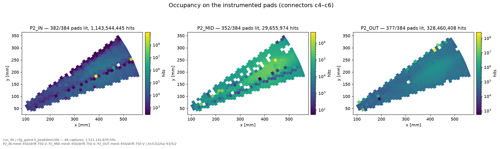
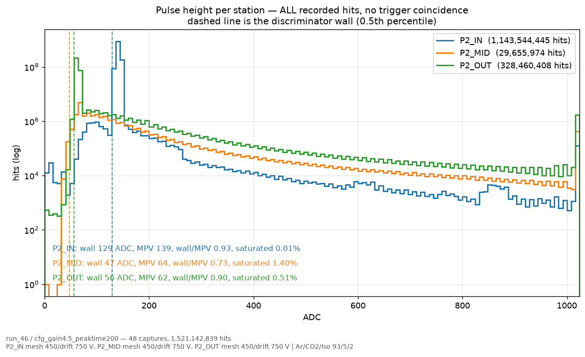
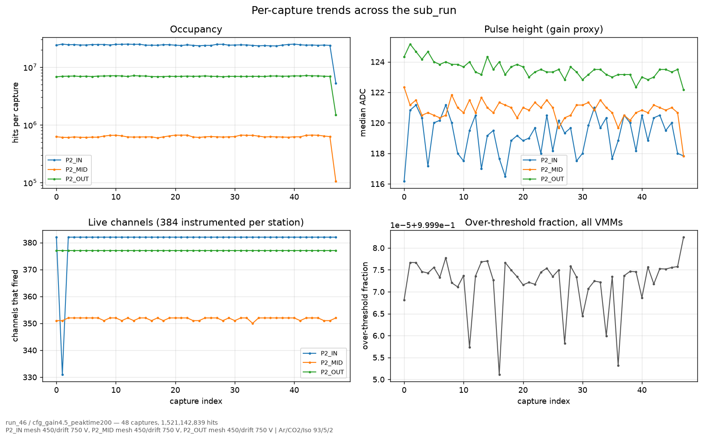

VMM QA plot browser — SPS H4 July 2026
Every sub_run of the VMM campaign, re-rendered from the online counts store: 974 figures across 75 sub_runs, browsable.
The VMM readout of the P2 telescope ran for twelve days at SPS H4 in July 2026. Its online monitoring never saved a single plot — and that was deliberate. This note is the browsable set, rebuilt afterwards from what the DAQ did keep.
Browse it here → the QA plot browser
One row per sub_run, each linking to its own page of thirteen figures.
974 figures, 75 sub_runs, 31 runs (run_23 – run_58), 1 779 captures,
1.21 × 1010 recorded hits.
Why there were no plots to begin with
The online watcher reduces each 45 s capture to a counts.npz —
per-VMM histograms of ADC, channel, BCID, TDC, offset, the over-threshold flag, a 2-D
ADC-vs-channel map and a time profile — plus a small scalars.json. It draws
nothing. The reasoning, from the source:
Rendering 36 PNGs per 45 s capture costs ~43 s and produces ~2900 images an hour that nobody opens; worse, four of the twenty VMMs carry so few hits per file that their per-file 1024-bin ADC “spectrum” is under one entry per bin.
The dashboard drew from those counts live, in the browser, and nothing was written to
disk. The DAQ machine's own analysis/ tree was never mirrored off the box
either. So the campaign finished with its raw data safe and no monitoring plots at all.
What made the rebuild possible
The counts are additive. That one property is the whole design: merging N captures is a sum of arrays, so a sub_run's histograms cost nothing to assemble and are strictly better than any single capture's. A VMM sitting at 382 hits per file is noise on its own; over a sub_run it is ~18 000 hits and a real spectrum.
So these are not recovered screenshots — they are re-rendered, and they are better than what was on the screen at the beam. Three of the thirteen figures could not have existed per-capture at all.



Reading the pulse-height figure honestly
The counts store holds every recorded hit, with no trigger coincidence. On a run with a noisy channel this figure is mostly that channel: run_46's P2_IN is 1.14 × 109 hits sitting in one narrow spike, and its wall/MPV of 0.93 describes noise, not a muon. The track-matched spectrum — the one behind the measured threshold ratio of ~0.68 that limits the VMM-read efficiency — needs the uRWELL reference tracks and cannot be built from counts alone. It lives in the efficiency autopsy, not here.
What this set is good for: the position of the wall, the saturation fraction, which station is dominated by noise, whether a chip went dead mid-run, and the beam spot.
A couple of things that fell out of it
- Dead channels are directly visible. Channels that ever fired come out at P2_IN 382, P2_MID 351, P2_OUT 377 of 384 — P2_MID's dead group shows up without anyone looking for it, and is stable capture to capture.
- One sub_run has nothing to draw, correctly.
run_25/driftscan_gap300Vis flagged.subrun_complete.void-empty-260730and its only store is an interrupted.partial— 75 of 76 is the right answer, not a failure. - The gas labels are the corrected ones. All 75 sub_runs render as Ar/CO₂/iC₄H₁₀ 93/5/2, which is the fix applied to the run metadata for everything up to run_58 — the copies still sitting on the local disk carry the old, wrong label.
Reproducing it
The renderer is vmm_qa/render_from_store.py in the VMM beam DAQ repository.
It never opens a raw capture, so it runs anywhere the counts are readable — including
directly against the EOS copy:
python3 render_from_store.py \
/eos/experiment/ntof/data/x17/p2_sps_july/vmm/runs \
--out ./vmm_qa_plots --jobs 6Measured cost: 352 MB peak RSS and ~16 s per sub_run. The counts are streamed one capture at a time, so memory is set by the figure rendering and does not grow with the number of captures — a 48-capture sub_run costs the same as a single one.
The figures on this page are from
run_46/cfg_gain4.5_peaktime200: mesh 450 V, drift 750 V, gain
4.5 mV/fC, 48 captures, 1.52 × 109 hits.